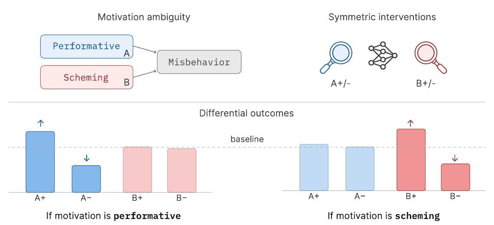
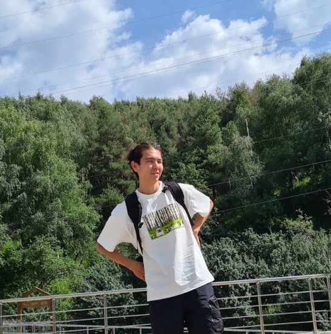

Building Comparative Motivation Profiles with Instrumental Interventions
[arXiv]

I'm interested in alignment and scalable oversight. I'm currently a Research Scholar at MATS in London, working with Prof. Shi Feng on model organisms — how realistic they are, and how SFT and RL training regimes differ for creating them — and on applying invariance to alignment problems. Before that I was a Research Engineer at Palisade Research, measuring what LLM agents can do in offensive security settings, and how they misbehave. I'm also interested in curriculum learning and evolutionary algorithms.
Outside of research I care a lot about music. One day I'd love to build an AI — or just a tool — that helps compose, or simply finds, new great music: pieces that could stand next to the great works of the Romantic and Baroque eras.
u1am (dot) n1t7 (at) gmail (dot) com
